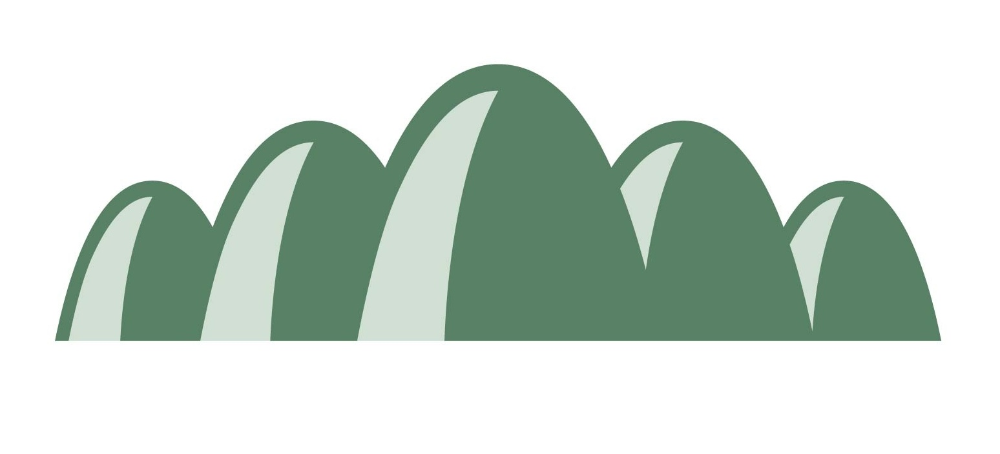

あなたが好きな山はこちら!

いつでも楽しく登れる：立石山(福岡・糸島)
糸島にある20分から登れる低山です。
朝日、夕日時間には素敵な風景が待っています。
もちろん、糸島で楽しいドライブやスイーツを楽しんだ後、
素敵な夕日を眺めながら、飲むコーヒーが絶品です。
いつでも楽しく登れる：立石山(福岡・糸島)
糸島にある20分から登れる低山です。
LONDON BUS CAFEは糸島でも若者人気なカフェの一つで、ちょっとしたインスタスポットにもなっています。 ドライブ疲れの後に、ぜひ息抜きでそこでいっぱいを楽しんでください。
「二見ヶ浦の夫婦岩」といえば、ほとんどの方が三重県・伊勢を思い浮かべるのではないでしょうか？なんと、福岡にも「二見ヶ浦の夫婦岩」があるんです。 天使の羽の画像を取れる『PALM BEACH THE GARDENS』からも砂浜沿いに歩いて5分程度なので、海の景色を楽しむこともできます。
玄界灘の海水を濃縮させて、大小二つの釜で三日間じっくり炊き上げ、とれた塩を杉樽で寝かせてはじめて完成する塩は、まさに自然の海水だけで作った天然の塩。また自家製品も販売されており、塩づくりの釜でゆでた「塩釜ゆで玉子」、とろとろのカスタードプリンに花塩とカラメルソースをかけていただく「花塩プリン」は人気！週末は行列ができるほどの人気だ。好きなものを選んで購入したら、工房をカフェ代わりに海を臨むベンチでいただこう！
ポップなフォトジェニックが売りのこの糸島に、大自然が織りなすスポットを見つけました！その名も「芥屋の大門」。唯一無二の見た目の洞窟はもちろん、みんな大好きジブリの世界を感じられる場所もあるんですよ。糸島の写真映えと一緒に、大自然を感じてみませんか。
登山口から山頂までは、ゆっくり上って約15分。距離にすると400mしかないが、体感ではその数倍長く感じる。
初めて旅するに、ちょっと不安だなーと思うのであれば、
弊社の山岳部があなたを連れて行きます！